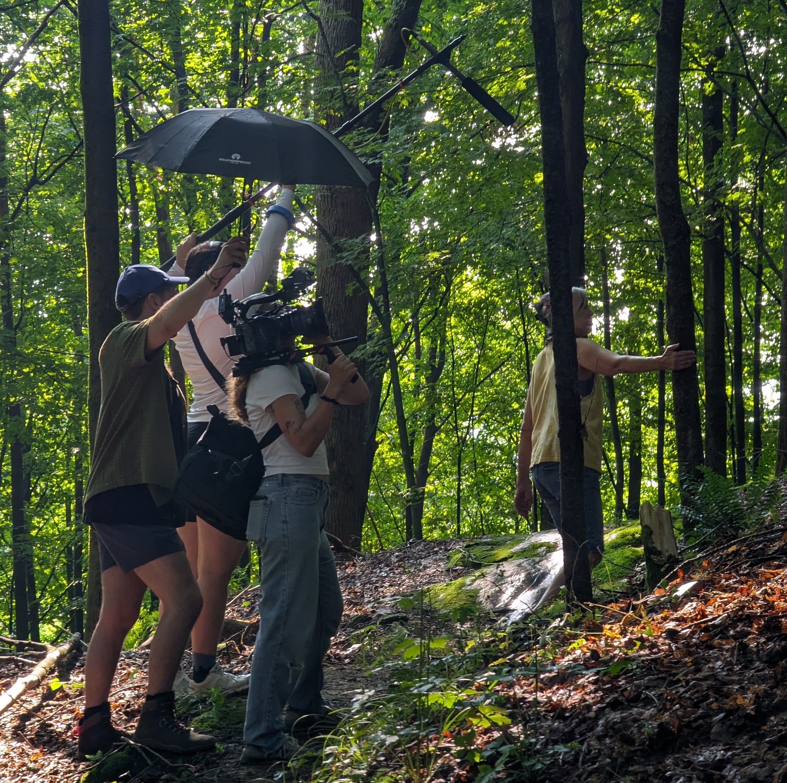

Location Sound

Sound Recording
I record interviews, dialogue and other on location sound for documentary and fiction films
I am saving up for my own kit, so looking for jobs as a sound trainee and boom op!
Sound Mixer/ HOD on the short film, All or Nothing
Sound Recordist on the short documentary, Shape of Memory
Sound Recordist on the short film, Raspberries in August
Sound Recordist on the short film, Message in the Tides
Sound Recordist on the short film, A Player First